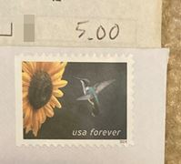
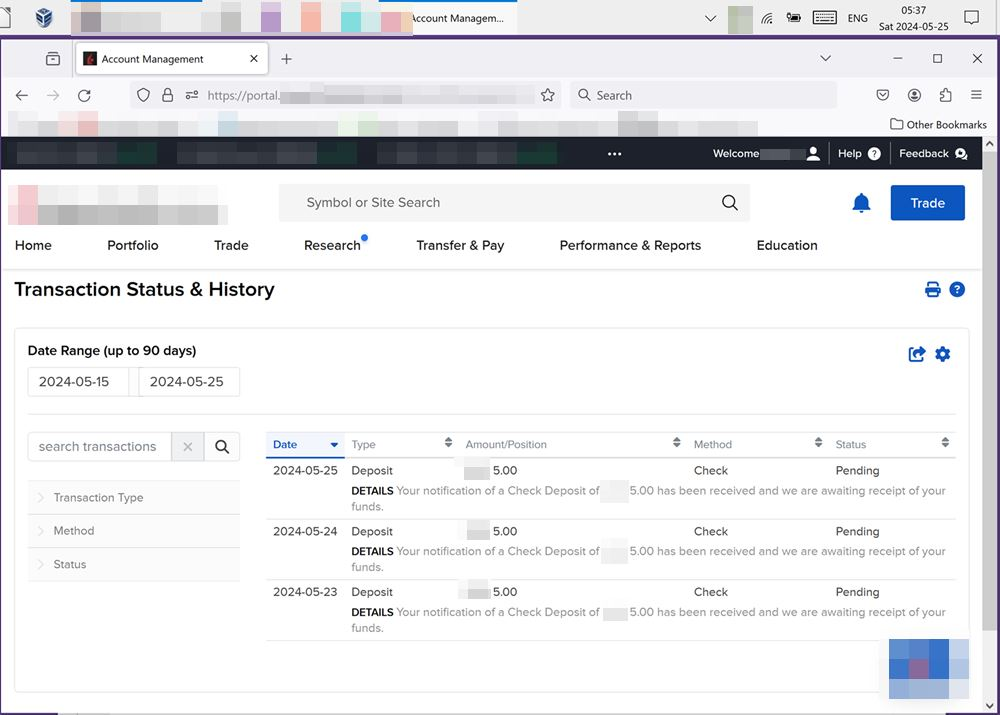
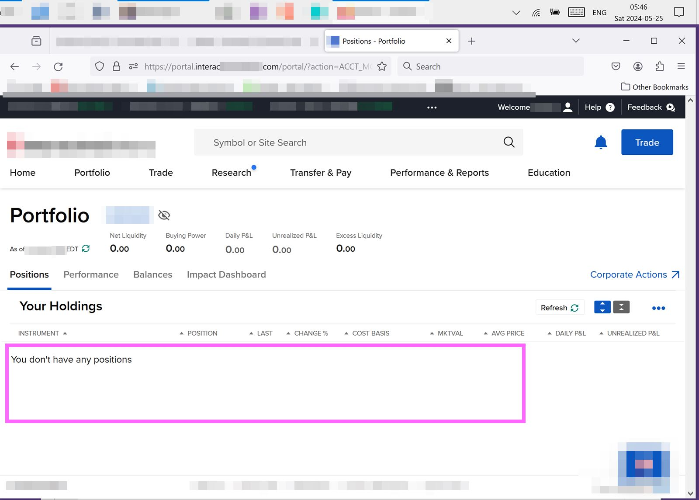

YOUR SPONSOR LINK HERE
#0006 - I Bought a Company (day -198) -- Bought a Company 004 我買了一個公司(從現在起198天)
Here’s today’s update: 今天報告一下
1.)
Today is day number "-198". 從現在起198天
2.)
In the past 24 hours I DIDN'T buy any of the following: 24小時以來，我都 __沒有__ 買這些東西
¤5 of beer ¤5的啤酒
¤5 of coffee at coffee shop 在咖啡店的¤5的一杯咖啡
¤5 of scratch tickets 一個¤5的刮刮樂
3.)
Today I DID mail in a third ¤5 check to the brokerage. 今天我 __是__ 又寄了一張支票到股票經紀人
Picture here: 照片在這裡

4.)
Discovered the brokerage portal shows a history of the times that I told them I am mailing them a check. 今天發現,在資訊看盤可以看到三天以來的歷史°
Yep so far it shows one per day for the past three days, so that matches what I did so far. 三天以來可以看到每天寄了一張支票沒錯°
Picture here: 照片在這裡

5.)
Still no money in the account, no positions here not even a cash position. 帳戶還是沒有錢在裡面了。沒有被佔據的頭寸。
This makes sense since I mailed the first check two days ago and it takes a few days for the check to make it there and then after that the brokerage said it will take 6 days after the check arrives before the funds will be available. 那也對因為現在只有兩天，還有因為,支票到達以後還需要再等兩天
Picture here: 照片在這裡

This has been an update, from day number "-198". 今天報告結束了
Note to readers: Do your own research and make your own choices. Don't do anything just because you saw me or someone else do it. I'm not recommending you do any of this, this is foremost for entertainment and for learning. 提醒讀者 自己研究自己決定 我沒有建議你去行動以上的意見 這都是為了樂趣跟為了學習
See previous: 更多以前寫的有關係的文章在這裡
#0005 - I Bought a Company (day -199) -- Bought a Company 003 我買了一個公司
#0004 - I Bought a Company (day -200) -- Bought a Company 002
#0003 - Make it a Game - Bought a Company 001 做成一個遊戲
2024-05-25 By author Morgan Jassen on lemonmama.com/lemonmama
Note: This blog post was last edited on 2024-12-05.
~~~
Copyright © under a double license to the individual author and to lemontofu.com.
Affilate statement: The authors may have interest, and or may be earning commissions, with companies or products mentioned on this blog.
{kind=link}
{kind=link}
{kind=link}